An AR experience that let clients walk through a proposal at full scale inside the space being renovated, so they could understand how it would feel before committing and pros could turn the vision into a yes.
Context
Built for renovation professionals, Houzz Pro's 3D Floor Planner is a simpler alternative to traditional CAD tools. It lets pros create and present 2D and 3D designs using real products from Houzz's catalog, with the long-term vision of turning those designs directly into project estimates.
User voices
Pros shared that clients often struggled to grasp the scale of a design and understand what they were committing to.
I can imagine what the finished space will look like, but it's hard to get the client to see the same thing.
A 3D view can look great, but it still doesn't show what it will feel like to stand in the room.
It's a big investment for the client...If I can't make the vision clear, I can lose the project.
Users
Renovation pros presenting 3D floor plans to clients.
JtbD
Communicate the vision clearly enough for clients to understand it and make decisions.
The problem
Pros could show clients the plan in 2D and 3D, but it was still a model viewed on a screen. That uncertainty made it harder for the clients to commit to an expensive project, and if the pro couldn't communicate the vision clearly, they risked losing it.
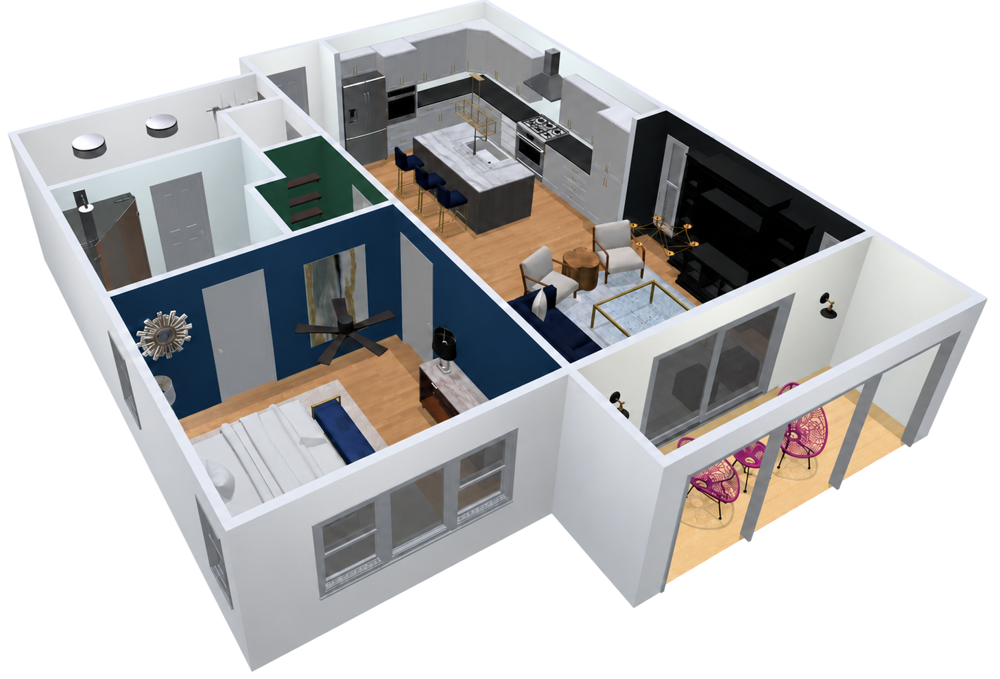
The goal
Bring the proposal off the screen and into the client's real space.
The setup challenge
We explored arrows, avatars, and navigation symbols before landing on a marker that combined position and direction in one simple form, while staying readable across both 2D and 3D views.
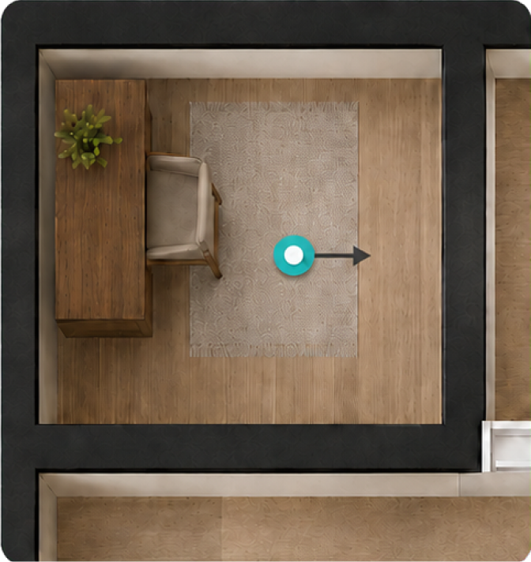
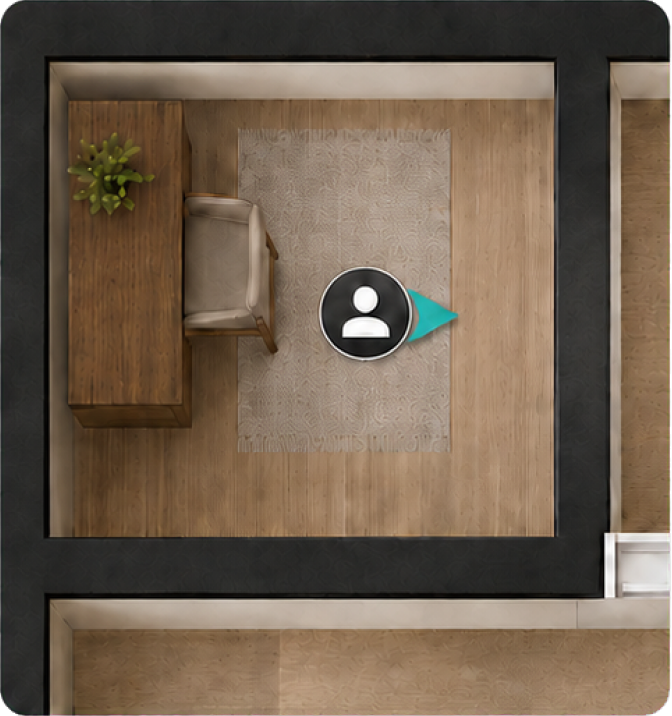
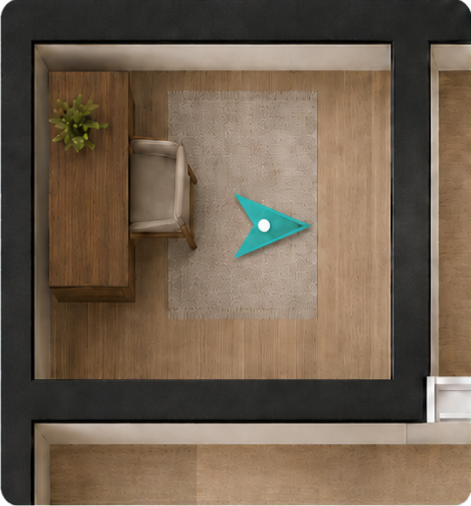
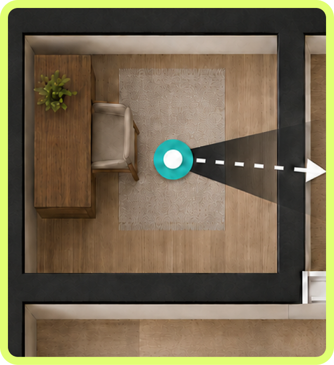
Pros tapped the AR icon beside the floor plan they wanted to present.
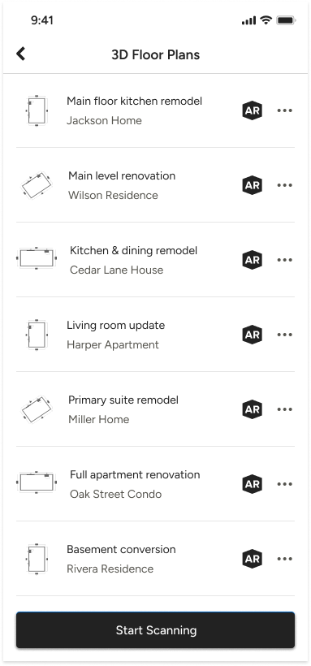
Move and rotate your floor plan until the pointer is on the spot where you want to start your AR experience.
Pros moved the marker to where they were standing and rotated the plan to match the room. The user stayed fixed while the floor plan rotated.
The initial concept assumed pros would place the marker, then turn to align with the plan. In testing, they did the opposite, rotating the plan to match the room. We designed around that behavior.
In the camera view, pros used drag and pinch gestures to align the virtual floor and walls with the physical room, then confirmed the placement.
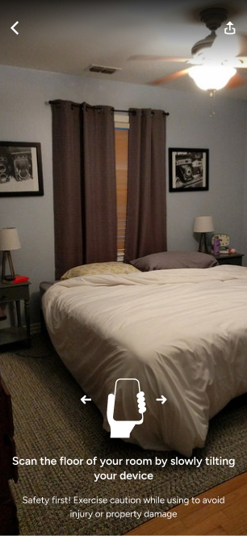
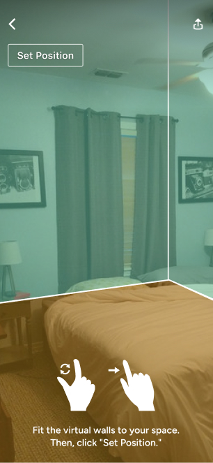
We tested several color pairs and opacity levels so the floor and walls stayed visible without covering the room.
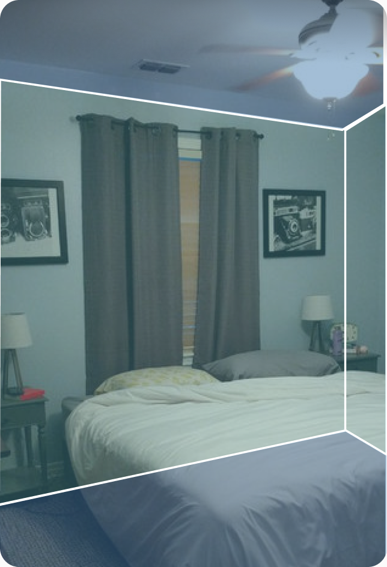
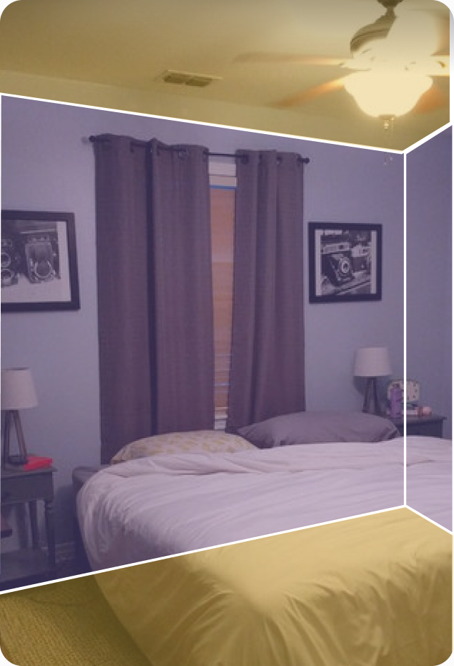
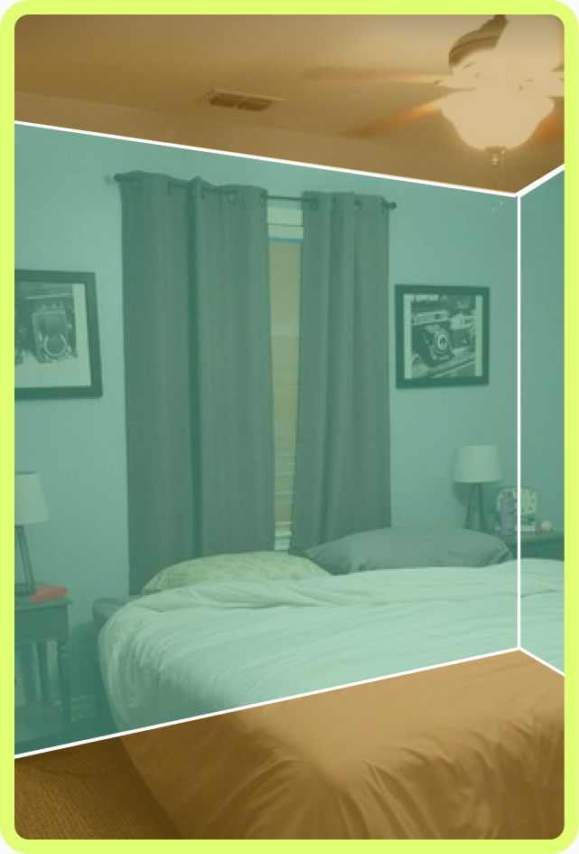
Once placement was confirmed, the controls faded away so clients could focus on the design and explore it at full scale.
This project changed how I think about designing with new technology. Three things from it have stayed with me:
01
Repeated behavior is a signal. Good interactions build on what people already expect.
02
When precision is difficult, clear feedback and easy correction matter more than getting it right the first time.
03
New technology earns its place when it helps people understand and decide, not just when it feels impressive.